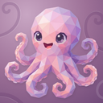
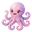
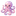
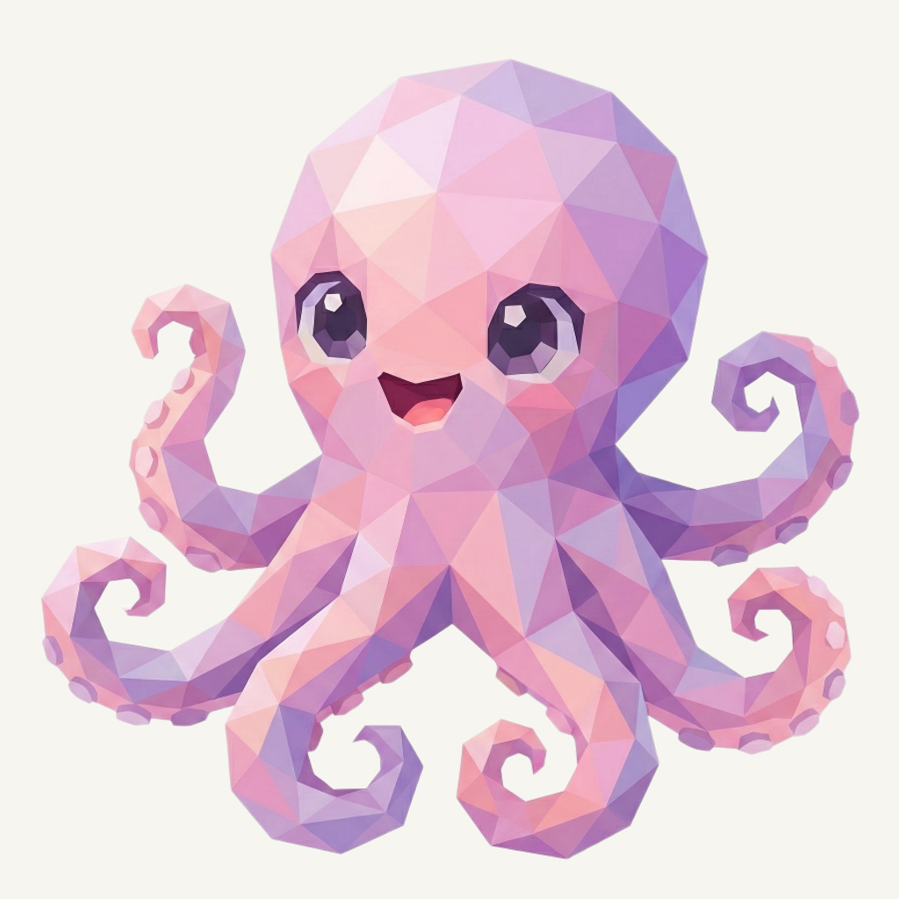
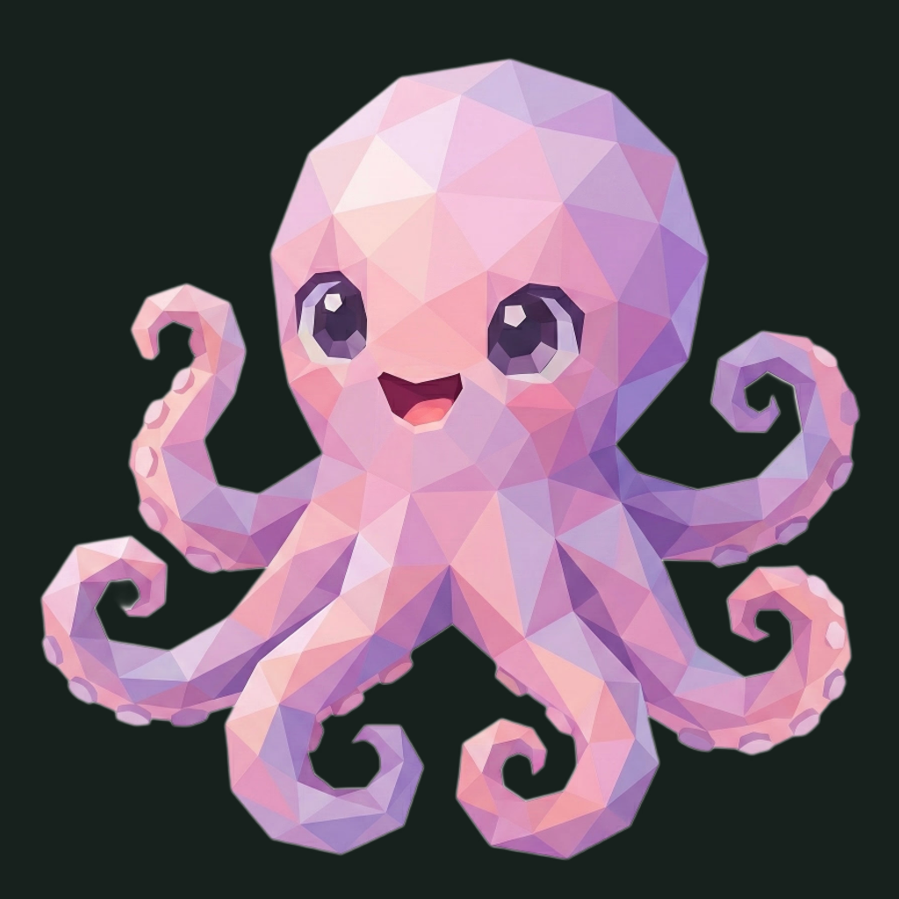

01 / Composition
A complete little octopus
The head, expression, curled arms, and native spacing are unchanged. Every visible arm remains clear of the rounded boundary. The original foreground is preserved byte-for-byte.
Animal family · Refined presentation
The familiar octopus, with a softly curled plum setting.
Original artwork retained · finishing 01
Native 900 × 900
01 / Composition
The head, expression, curled arms, and native spacing are unchanged. Every visible arm remains clear of the rounded boundary. The original foreground is preserved byte-for-byte.
02 / Drawing
The pink-to-lilac planes and violet curls already belong to the family. Their existing motion supplies the character; this pass adds no accessory and makes no image-generation call.
03 / Presentation
Open hook-shaped channels enter a muted plum field from different edges. Fine grain, offset highlights, and low contact shadows keep the background tactile and the octopus prominent.
Presentation tiles at 128/64 px; transparent artwork for small app and browser marks.



At 32 px the pink head and violet curls carry the mark. At 16 px the small arm gaps and facets merge; toolbar and tab marks use the transparent source. Native source: 900 px; 1024/2048 px exports are upscales.
A designed background, with colors sampled from the untouched original.
Select a swatch to copy its hex value. The Hooky UI primary (#9666B7) remains a separate product color.
One retained foreground, checked on two contrasting backgrounds.


Original artwork retained · zero generation calls · native 900 × 900
Loading brief…
The original animal was retained without a model request. These owner-provided boards guide the independently composed matte field, light, and shallow surface texture.


{kind=link}
{kind=link}
{kind=link}
{kind=link}
{kind=link}